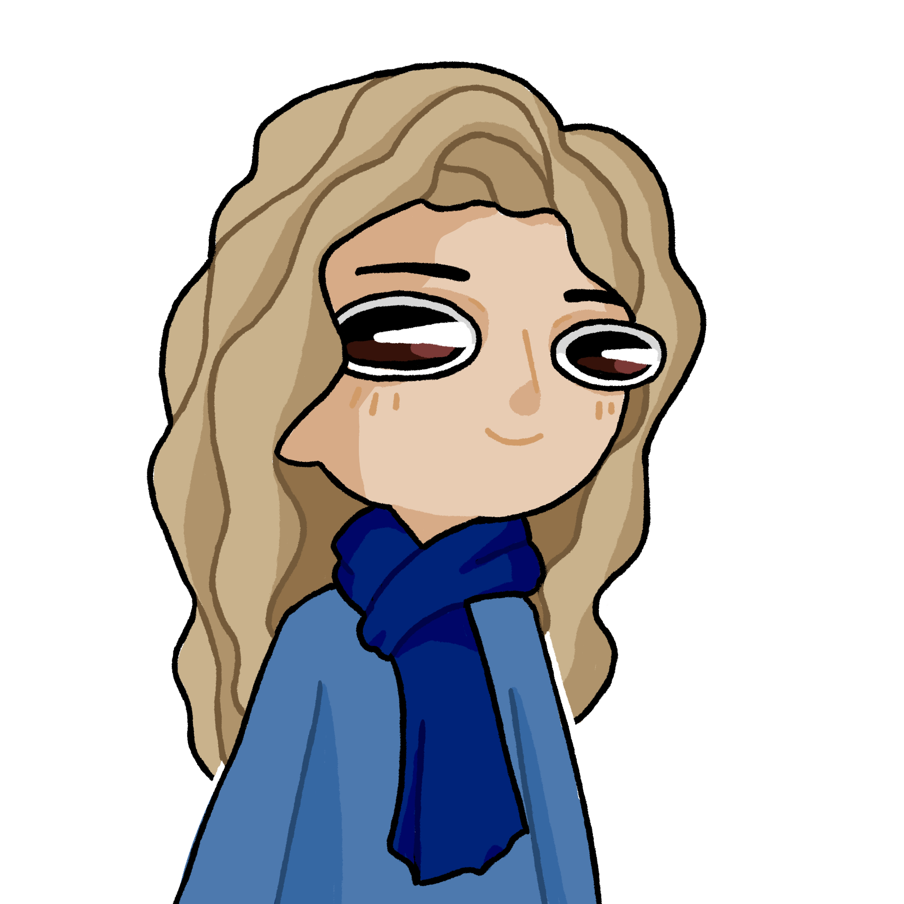

Samy avait ramené Ivan, pour qu’ils dorment avant leur voyage. À l’heure de se lever, Samy assista à un spectacle tellement mignon, qu’il n’osait briser le cadre. Ivan s’était assoupi en serrant le coussin dans ses bras. Malheureusement, il devait le réveiller, bien que cela lui fende le cœur.
 Allez debout feignasse !
Allez debout feignasse !
 Mmh…
Mmh…
Samy donna des coups de pieds à Ivan jusqu’à ce qu’il se lève. D’après ce qu’on leur avait dit, Alan était parti vivre en Argentine. Ils allaient donc devoir prendre l’avion. Ils arrivèrent à l’aéroport, et grâce au salaire de Léopold, ils s’achetèrent des billets. Grâce à celui de Samy, ils s’achetèrent un repas. Une fois dans l’avion (et Léopold dans la soute), ils s’endormirent tous les deux plus vite qu’en S.I.
Mmh…
 Messieurs, réveillez-vous nous sommes arrivés.
Messieurs, réveillez-vous nous sommes arrivés.
J’arrive maman…
Je ne suis pas ta mère Ivan.
Mais comment vous conn… Pauline ? Qu’est-ce que tu fais là ?
 Je travaille, ça se voit pas ?
Ça s’est si mal passé que ça tes études ?
Tu veux qu’on parle des tiennes ?
Ivan réveilla Samy et ils descendirent. Arrivés aux portes de l’aéroport, ils entendirent le petit « Attendez ! » caractéristique d’une fille qui court.
Quoi encore ?
J’ai fini mon travail pour la semaine, je peux venir avec vous ? On m’a expliqué par rapport à Léopold, j’aimerais bien vous aider.
Non.
Ok ! En plus tu parles bien espagnol c’est cool !
Je sais pas pourquoi je donne encore mon avis…
Ils prirent tous les trois un taxi en direction de la ville, en espérant trouver des informations.